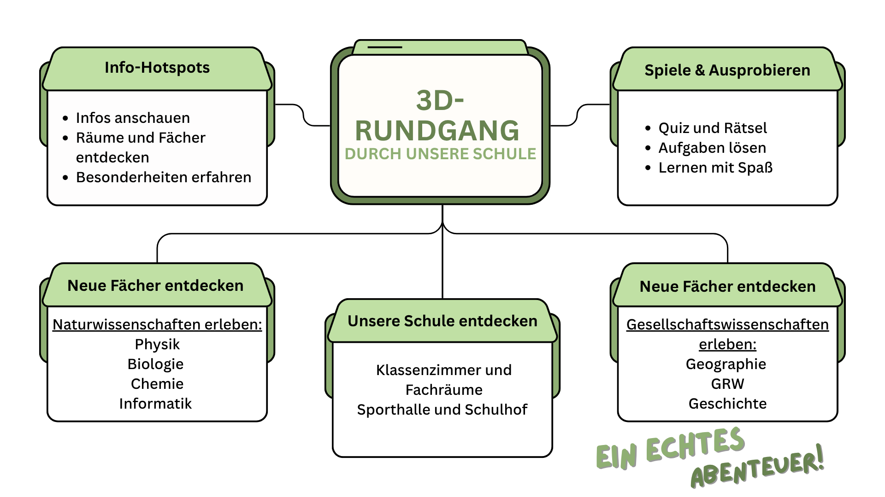

Entdecke unsere Schule in 3D
Tauche ein in unsere Schule und entdecke sie ganz bequem von überall aus. Mit unserem interaktiven 3D-Rundgang erhältst Du spannende und realistische Einblicke in Klassenzimmer, Fachräume und besondere Orte des Schullebens – fast so, als wärst Du selbst vor Ort.
Rundgang starten!